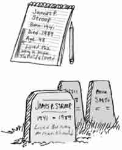

Something You Can Do
Have you ever visited a cemetary? They are really very interesting places to go. Think about all the lives and stories there are to learn about! Every person in history has died (unless they are still alive), including your own grandparents, great-grandparents, and great-great-grandparents. And each one was once a child like you! So let’s begin

A Cemetery Record
First get some supplies:
- a notepad and pencil
- ruler and paper
- someone who likes history (maybe Dad or Mom?)
- First ask your history expert for help. Which of your relatives have died? Find out if their gravesights are close enough to visit. If they are too far away, plan a trip to go to a cemetary near you. Remember to bring along your notepad and pencil.
- Now let’s begin our gravestone search! At the cemetary, read what the gravestones say. Many tell the person’s name, when they were born, and when they died. Write these things in your notebook. If the stone doesn’t tell you, figure out their age when they died. You’ll have to do some math for this!
- Plan on recording about ten stones. If they are relatives, it will be fun to learn some stories about their lives. Other gravestones to look for are:
- oldest (who were the first people to be buried here?)
- newest (is there a fresh mound of dirt anywhere?)
- shortest lived (can you find a child’s gravestone?)
- longest lived (did anyone live past 90? or 100?)
- most interesting (I found a stone once that only said “Brother”)
- Make a graph or timeline to show each person’s life. You could use a ruler and count each 10 years as 1” to show the length of their life. Make a page for each one. If you can, talk to someone who knew that person. Who were they? How did they live?
- Think about this: each person has soul that lives forever. You don’t know whether your life on earth will be long or short, but that doesn’t really matter. What is important is what you do with your life. You can live for yourself and lose your soul. Or you can turn from your own ways and ask God to save your soul for heaven. Your selfish, sinful life must be buried away so a new life can begin!